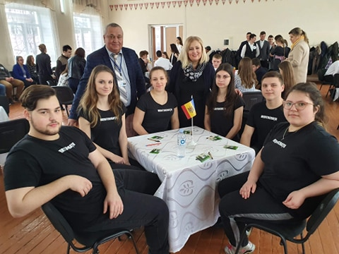

Ştiri
„Suntem în cuvânt și-n toate
Floare de latinitate..."
Întreaga țară astăzi, pe 15 ianuarie 2020, își pleacă fruntea în cinstea aniversării de 170 de ani a poetului națiunii: Mihai Eminescu.
Pentru liceul nostru această zi este una specială, de aceea Liceul Teoretic „Mihai Eminescu" din Drochia se bucură de o întreagă săptămână dedicată poetului. Săptămâna eminesciană a început cu o expoziție de carte pentru cei mici, pentru a-i iniția în opera Luceafărului românesc din anii fragezi de copilărie. Pe holurile școlii au fost redate poezii și cântece pe versurile poetului, iar clasele gimnaziale au realizat desene tematice. La organizarea activității au contribuit Senatul Liceului Teoretic „Mihai Eminescu", Administrația liceului și biblioteca.
Urmăriți-ne pagina în continuare pentru a rămâne informați despre activitățile noastre.

IPLT „Mihai Eminescu”, oraşul Drochia, a fost gazdă pentru cea de-a treia ediţie a Concursului „CE? UNDE? CÂND? Cunoaşte-ţi Parlamentul!”.În concurs au fost încadrate 12 echipe din raioanele nordice şi oraşul Bălţi, în total au concurat 68 de participanţi.
Află mai mult
Şcolarii din raionul Drochia au avut astăzi parte de mai multe surprize. Profesorii i-au întâmpinat cu dulciuri, muzică şi cadouri. Sărbătoarea a fost organizată cu ocazia Zilei Internaţionale a Elevului, marcată la sfârşitul lunii septembrie.
Dascălii de la gimnaziul din satul Pelinia s-au deghizat în personaje de poveste şi şi-au întâmpinat discipolii în curtea şcolii.
Află mai mult
© Powered by Arapu Andrei